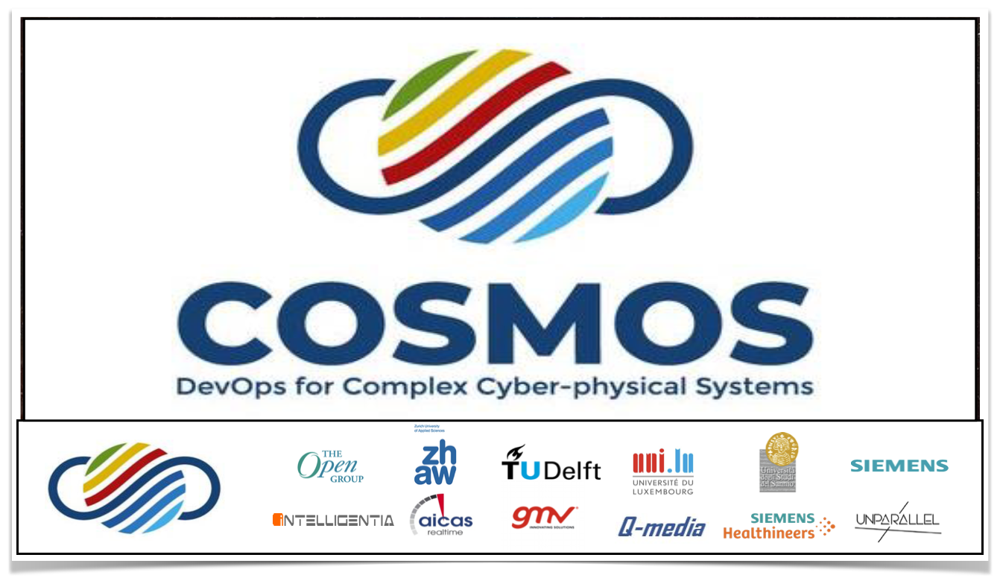

| He mainly works (or worked) with: | ||
|---|---|---|
| Diego Martin | (Zurich University of Applied Science, research assistant); | 2018-2019 |
| Emanuel Stoeckli | (University of St. Gallen); | 2018-2019 |
| Pooja Rani | (University of Bern, PhD student); | 2018-Today |
| Christoph Laaber | (University of Zurich); | 2018-2020 |
| Fiorella Zampetti | (University of Sannio); | 2017-Today |
| Giovanni Grano | (University of Zurich, PhD student, SURF-MobileAppsData); | 2017-2020 |
| Carmine Vassallo | (University of Zurich, PhD student, SURF-MobileAppsData). | 2017-2020 |
| Adelina Ciurumelea | (University of Zurich, PhD student, SURF-MobileAppsData); | 2016-2018 |
| Carol V. Alexandru | (University of Zurich, PhD student, Whiteboard); | 2015-2019 |
| Layan (Mashael) Etaiwi | (Polytechnique Montréa); | 2020-03- to 2020-11 |
For more information about all advised students see the page: Teaching/Advised students
| Postdocs, Senior Researchers, or Applied Researchers: | ||
|---|---|---|
| Fiorella Zampetti | (University of Sannio); | 2017-Today |
| Marcela Ruiz | (Zurich University of Applied Science); | 2020-03-Today |
| Leonardo Militano | (Zurich University of Applied Science); | 2019-Today |
| Sean Marphy | (Zurich University of Applied Science); | 2019-Today |
| Alessio Gambi | (University of Passau); | 2019-Today |
| Christoph Mayr-Dorn | (Johannes Kepler University, Linz; | 2018-Today |
| Sebastian Proksch | (University of Zurich, currently Postdoc at the University of Zurich); | 2018-Today |
| Karina Villela | (Fraunhofer IESE, applied research); | 2018-Today |
| Mohammad Ghafari | (University of Bern); | 2017-Today |
| Andrea Di Sorbo | (University of Sannio, Advised during the PhD); | 2015-Today |
| Emitza Guzman | (University of Zurich); | 2015-2017 |
| Professors: | ||
|---|---|---|
| Prof. Mintchev | (ETH); | 2020-01-Today |
| Aitor Arrieta Marcos | (Mondragon Unibertsitatea); | 2020-05-Today |
| Prof. Scaramuzza | (UZH); | 2019-Today |
| Dr. Bianculli | (University of Luxembourg); | 2019-Today |
| Dr. Pastore | (University of Luxembourg); | 2019-Today |
| Prof. Robles | (Universidad Rey Juan Carlos); | 2019-Today |
| Dr. Pastore | (University of Luxembourg); | 2019-Today |
| Prof., Damian A. Tamburri | (Academy of Data Science, TU/e); | 2019-Today |
| Paolo Tonella | (University of Lugano); | 2019-Today |
| Shaukat Ali | Simula Research Laboratory; | 2018-Today |
| Davide Taibi | (Tampere University); | 2019-Today |
| Oscar Nierstrasz | (UniBE); | 2018-Today |
| Christoph Mayr-Dorn | (Johannes Kepler University); | 2018-Today |
| Carlo Ghezzi | (Polimi); | 2018-Today |
| Gregorio Robles | (King Juan Carlos University, Madrid, Spain); | 2018-Today |
| Yu Zhou | (Nanjing University of Aeronautics and Astronautics); | 2016-Today |
| Taolue Chen | (Birkbeck, University of London); | 2016-Today |
| Andy Zaidman | (Delft University of Technology, Netherlands); | 2016-Today |
| Aaron Visaggio | (University of Sannio); | 2015-Today |
| Venera Arnaoudova | (Washington State University ); | 2015-Today |
| Harald Gall | (University of Zurich); | 2014-Today |
| Gabriele Bavota | (University of Lugano); | 2013-2015 |
| Gerardo Canfora | (University of Sannio); | 2011-Today |
| Massimiliano Di Penta | (University of Sannio); | 2011-Today |
| Andrea De Lucia | (University of Salerno); | 2009-2017 |
For more information about all research collaborations: Publications
| Atos - (Autonomous vehicles) | Spain | 2020-02-Today |
| BOND | Switzerland | 2019-10-Today |
| Helio | Switzerland | 2019-10-Today |
| Siemens AG and Siemens Healthcare GmbH | Germany | 2019-05-Today |
| Intelligentia S.r.l. | Italy | 2020-01-Today |
| AICAS GmbH | Germany | 2020-01-Today |
| Q-media s.r.o. | Czech Republic | 2020-01-Today |
| Unparallel Innovation LDA | Portugal | 2019-01-Today |
| Xpeppers Switzerland - DeepRacer, Robomaker - (Autonomous vehicles) | Switzerland | 2019-01-Today |
| smide - https://www.smide.ch/ | Switzerland | 2019-01-Today |
| The Open Group (Scott Hansen) | Belgium | 2019-01-Today |
| Siemens (Rubner, Carolin) | Germany | 2019-01-Today |
| GMV https://www.gmv.com | Spain | 2019-01-Today |
| https://www.intelligentia.eu | (Italy); | 2019-01-Today |
| SOHEILA DEHGHANZADEH | https://www.denso.com/de/en/innovation/ | 2019-01-Today |
| Haidar Osman | (Senior Data Scientist - Swisscom, Switzerland); | 2018-Today |
| Red Hat | Switzerland | 2018-Today |
| https://vshn.ch/en/ | Switzerland | 2018-Today |
| https://ikubinfo.al/ | Austria | 2018-Today |
| Daniele Romano | (ING Netherland); | 2017-Today |
| Junji Shimagaki | (Sony Mobile Communications); | 2016-Today |
Personal Bio:
Professionally, I'm a passionate Computer Science Researcher - My research interests are in the domain of Software Engineering (SE) and cloud computing (CC). You can see more about about my publications, ongoing research projects, and open master/bachelor theses at: https://spanichella.github.io/ On a personal point of view, I like to have a few close and honest (very important and crucial thing for me) friends. There is no life without very good friends. I'm very lucky on this: my brother Annibale and my sister Lucia are also my two best friends. My girlfriend Cristiana completes me in many aspects and I love her with all my heart. I enjoy on a personal level know new people and learn something about their provenance, their culture, their ambitions, etc. I strongly believe that there is always something to learn from others in both personal and professional life.
Education
University of Sannio, Italy
Thesis Title: "Supporting Newcomers in Open Source Software Development Projects" Thesis Topics: "Supporting Developers, Mining of Software Repositories (Mailing lists, Issue trackers, Versioning Systems etc.)"
University of Salerno, Italy
Thesis Title: Improving IR-based Traceability Recovery Using Smoothing Filters Magna cum Laude Adviser: Prof. Andrea De Lucia
University of Molise, Italy
Thesis Title: Improving IR-based traceability recovery via noun-based indexing of software artifacts Thesis Topics: Software Engineering, Traceability Management, Natural Lan- guage Processing (NLP) Magna cum Laude Advisers: Prof. Giovanni Capobianco, Dr Rocco Oliveto
Research Interests

- Monolithic and Cloud Applications - Cyber-physical systems (drones, robots and self-driving cars)
Software repositories such as source control systems, archived communications between project personnel, and defect tracking systems are used to help manage the progress of software projects. Software practitioners and researchers are recognizing the benefits of mining this information to support the maintenance of software systems, improve software design/reuse, and empirically validate novel ideas and techniques. Research is now proceeding to uncover the ways in which mining these repositories can help to understand software development and software evolution, to support predictions about software development, and to exploit this knowledge concretely in planning future development. The Mining Software Repositories (MSR) field analyzes the rich data available in software repositories to uncover interesting and actionable information about software systems and projects.
Empirical software engineering is a sub-domain of software engineering focusing on experiments on software systems (software products, processes, and resources). It is interested in devising experiments on software, in collecting data from these experiments, and in devising laws and theories from this data. Proponents of experimental software engineering advocate that the nature of software is such that we can advance the knowledge on software through experiments only. The scientific method suggests a cycle of observations, laws, and theories to advance science. Empirical software engineering applies this method to software.
Peer code review, a manual inspection of source code by developers other than the author, is recognized as a valuable tool for reducing software defects and improving the quality of software projects. In 1976, Fagan formalized a highly structured process for code reviewing, based on line-by-line group reviews, done in extended meetings--code inspections. Over the years, researchers provided evidence on code inspection benefits, especially in terms of defect finding, but the cumbersome, time-consuming, and synchronous nature of this approach hinders its universal adoption in practice. Nowadays, many organizations are adopting more lightweight code review practices to limit the inefficiencies of inspections. In particular, there is a clear trend toward the usage of tools specifically developed to support code review. Modern code reviews are (1) informal (in contrast to Fagan-style), (2) tool-based, and (3) occurs regularly in practice nowadays, for example at companies such as Microsoft, Google, Facebook, and in other companies and OSS projects. The growth in usage of the modern code review process raises many questions. Recently, the research effort has as main focus to find approeaches and tools to improve the code review process. Specifically, develop recommender systems able to (better) support developers during the code review process.
Traceability has been defined as "the ability to describe and follow the life of an artefact (requirements, code, tests, models, reports, plans, etc.), in both a forwards and backwards direction". Thus, traceability links help software engineers to understand the relationships and dependencies among various software artefacts (requirements, code, tests, models, etc.) developed during the software lifecycle. The two main research topics related to the traceability management are event-based systems for traceability management and information retrieval based methods and tools supporting the software engineer in the traceability link recovery.
Textual analysis can be described as the examination of a text in which an educated guess is formed as to the most likely interpretations that might be made of that text. It is where the researcher must decentre the text to reconstruct it, working back through the narrative’s mediations of form, appearance, rhetoric, and style to uncover the underlying social and historical processes, the metalanguage that guided the production. It is suggested that textual analysis can cover four main underlying constructs: language and meaning, ideology, ideology and myth, and historicity. In this sense, textual analysis is a methodology: a way of gathering and analysing information in academic research. (Mckee, A 2001)
Machine learning and Genetic Algorithms deals with the issue of how to build computer programs that improve their performance at some tasks through experience. Machine learning and Genetic algorithms have proven to be of great practical value in a variety of application domains. Not surprisingly, the field of software engineering turns out to be a fertile ground where many software development and maintenance tasks could be formulated as learning problems and approached in terms of learning algorithms. Examples of the successful application of machine learning algorithms to SE problems are Bug prediction, Code (and code change) prediction, Cost estimation, Prioritization or clustering of user reviews (in the context of mobile apps), test case generation, etc.
Continuous Delivery (CD) is a software engineering approach in which teams produce software in short cycles, ensuring that the software can be reliably released at any time. It aims at building, testing, and releasing software faster and more frequently. The approach helps reduce the cost, time, and risk of delivering changes by allowing for more incremental updates to applications in production. A straightforward and repeatable deployment process is important for continuous delivery. Continuous Integration (CI) consists in a specific stage of CD process where team members integrate their work in an automatic manner, which allows a fast building, testing, and releasing of software, leading to multiple integrations per day. Researchers in this field have as main focus the development of recommender systems able to provide suggestions to developers and testers during Continuous Integration activities.
Open Bachelor- / Master- / PhD- Theses
The pleasure of advising students and junior researchers in general:
Advising students (and in general junior researchers) is really a pleasure. About this, the following email, received by a student that I had the pleasure to advise on topics concerning cloud applications, made my day: " Dear Sebastiano, I am very glad to share that I have received an offer for a full-time position (Cloud DevOps Engineer) from Swisscom. I am very thankful for the valuable learning experience during the thesis work, which made it easy for me to get through the final round. I feel very grateful that I have learned a lot under your supervision. Thank you so much again for the guidance, sharing the professional values and standards for research work under your supervision. I am very excited to start my career soon with Swisscom in the coming weeks. I would like to stay in contact with you, on both personal and professional levels. Have a relaxing evening :) Kind regards, ...
To young researchers: "Believe in your Talents":
"We are not supposed to hide our talents. Imagine being in a dark room, a candle would make a nice light there, and that is the effect of making visible our talents to the world".
TOPICS:
There are theses available (for both bachelor and master degree) on topics related to his research interests. It is suggested to contact him directly (by e-mail), or, if you want, to have a look at his recent publications on the various topics. In particular, there are available theses on the following topics:
1) Mobile and Automated Testing
2) Machine Learning Applied to Software Engineering
3) Continuos Delivery and Continuos Integration
4) Maintenance, development and testing of Cloud Application
- Continuous Integration (CI) consists in a specific stage of CD process where team members integrate their work in an automatic manner, which allows a fast building, testing, and releasing of software, leading to multiple integrations per day. A thesis in this topic will have as main focus the development of recommender systems able to provide suggestions to developers and testers during Continuous Integration activities.
5) Tools for maintenance, development, and testing of
- Monolithic and Cloud Applications
- Cyber-physical systems (drones, robots and self-driving cars)
6) Automated Code Review
7) Cloud-based Testing
8) Mining software repositories (analysis of software artifacts to support development)
- Define a Feedback Mechanisms able to help developers digest the huge amount of feedback they receive from users on a daily basis, transforming user reviews into maintenance tasks (fixing issues or building features). For more information read the recent papers accepted "How Can I Improve My App? Classifying User Reviews for Software Maintenance and Evolution", "What Would Users Change in My App? Summarizing App Reviews for Recommending Software Changes", "Analyzing Reviews and Code of Mobile Apps for better Release Planning", "Recommending and Localizing Change Requests for Mobile Apps based on User Reviews" and the related tools called ARdoc and SURF.
- Develop recommender systems able to (better) support developers during the code review process. For more information read the recent paper accepted "Would Static Analysis Tools Help Developers with Code Reviews?".
- Development recommender systems based on Source Code Summarization and Code Change Summarization techniques able to support developers during development or maintenance activities. For more information read the recent paper accepted at ICSE 2016 entitled "The impact of test case summaries on bug fixing performance: An empirical investigation". The slides of my lecture of the course Software Maintenance and Evolution describe the concepts of Source Code Summarization and Code Change Summarization.
- Develop search-based approaches to better predict change and defect prone classes. For more information read the recent paper accepted at GECCO 2016 entitled "A Search-based Training Algorithm for Cost-aware Defect Prediction".
- Automatic redocumentation of existing systems by mining software repositories. For more information have a look at the papers accepted "Mining source code descriptions from developer communications" and "CODES: mining sourCe cOde Descriptions from developErs diScussions".
- Automatic identification of skills and teamwork in software projects by mining software repositories For more information have a look at the paper accepted "Supporting Newcomers in Software Development Projects and the list of recent publications.
- Development of recommender systems, i.e., of systems able to provide suggestions to developers and managers during development or maintenance activities. For more information have a look at the paper accepted "Development Emails Content Analyzer: Intention Mining in Developer Discussions", "Analyzing APIs Documentation and Code to Detect Directive Defects" and the related tool called DECA.
Publications
|

|
|
------------------------------------------------------------------------------------------------------------------------------------------------------------------------
The main research goal of my research is to conduct industrial research, involving both industrial and academic collaborations,
to sustain the Internet of Things (IoT) vision, where future "smart cities" will be characterized by millions of smart systems
(e.g., cyber-physical systems such as drones, and other autonomous vehicles)) connected over the internet, controlled by complex embedded software implemented for the cloud.
My research interests are in the domain of Software Engineering (SE)
and cloud computing (CC): DevOps (e.g., Continuous Delivery, Continuous integration),
Machine learning applied to SE, Software maintenance and evolution (with particular focus on Cloud, mobile, and Cyber-physical applications),
Mobile Computing. Moreover, I'm promoting research on "Summarization Techniques for Code, Changes, and Testing".
Being an author of a paper one has to contribute not just read it and give debatable feedback:
https://www.acm.org/publications/policies/authorship
2021


2020


2019

|
|
[C42] Rafael Kallis, Andrea Di Sorbo, Gerardo Canfora and Sebastiano Panichella: Ticket Tagger: Machine Learning Driven Issue Classification. 35th IEEE International Conference on Software Maintenance and Evolution (ICSME 2019).
|

|
|
[J9] C. Vassallo, S. Panichella, F. Palomba, S. Proksch, A. Zaidman and H. Gall: How Developers Engage with Static Analysis Tools in Different Contexts . Empirical Software Engineering Journal.
|

|
|
[GE2] Sebastiano Panichella, Emitza Guzman, Liliana Pasquale, Norbert Seyff, Andrea Di Sorbo: Guest Editors Introduction: Special Issue on User Feedback and Software Quality in the Mobile Domain. Information & Software Technology.
|
|
|
[GE1]
Sebastiano Panichella, Fabio Palomba, David Lo, Meiyappan Nagappan::
Guest Editorial: Special Issue on Software Engineering for Mobile Applications. .
Empirical Software Engineering 24(6): 3249-3254 (2019) |
|
|
[J8] Carol Alexandru,Sebastiano Panichella, Sebastian Proksch and Harald Gall: Redundancy-free Analysis of Multi-revision Software Artifacts. Empirical Software Engineering Journal. |

|
|
[C41] D. Martin and S. Panichella: The Cloudification Perspectives of Search-based Software Testing. International Workshop on Search-Based Software Testing (SBST 2019), To Appear .
|

|
|
[J7] G. Grano, T. Titov, S. Panichella, H. Gall: Branch Coverage Prediction in Automated Testing. Journal of Software: Evolution and Process (JSEP). . |

|
|
[C40] Y. Zhou, C. Wang, Y. Xin, T. Chen, S. Panichella, and H. Gall.: DRONE: A Tool to Detect and Repair Directive Defects in Java APIs Documentation. ICSE 2019 - To Appear. |

2018
|
|
[J6] Y. Zhou, C. Wang, Y. Xin, T. Chen, S. Panichella, and H. Gall.: Automatic Detection and Repair Recommendation of Directive Defects in Java API Documentation. Transaction on Software Engineering 2018 |
|
|
[C39] Carol V. Alexandru; José J. Merchante; Sebastiano Panichella; Sebastian Proksch; Harald C. Gall; Gregorio Robles.: On the Usage of Pythonic Idioms. Artifacts. Onward 2018 (RANK: C) |
|
|
[C38] S. Panichella: Summarization Techniques for Code, Change, Testing and User Feedback . In Proceedings of the IEEE 25th International Conference on Software Analysis, Evolution and Reengineering (SANER 2018). RANK: B. |

|
|
[C37] A. Ciurumelea, S. Panichella, H. Gall.: Automated User Reviews Analyser. In Proceedings of the 40th International Conference on Software Engineering (ICSE 2018). RANK: A*. |

|
|
[C36] L. Pelloni, G. Grano, A. Ciurumelea, S. Panichella, F. Palomba, H. Gall.: BECLoMA: Augmenting Stack Traces with User Review Information. Proceedings of the IEEE 25th International Conference on Software Analysis, Evolution and Reengineering (SANER 2018). RANK: B. |


|
|
[C35] G. Grano, T. Titov, S. Panichella, H. Gall: How High Will It Be? Using Machine Learning Models to Predict Branch Coverage in Automated Testing. MaLTeSQuE (co-located with SANER 2018). RANK: B. |
|
|
[C34] G. Grano, A. Ciurumelea, S. Panichella, F. Palomba, H. Gall.: Exploring the Integration of User Feedback in Automated Testing of Android Applications. Proceedings of the IEEE 25th International Conference on Software Analysis, Evolution and Reengineering (SANER 2018). RANK: B. Invited for journal extension |

|
|
[C33] C. Vassallo, S. Panichella, F. Palomba, S. Proksch, A. Zaidman and H. Gall: Context is King: The Developer Perspective on the Usage of Static Analysis Tools. Proceedings of the IEEE 25th International Conference on Software Analysis, Evolution and Reengineering (SANER 2018). RANK: B.Invited for journal extension |
------------------------------------------------------------------------------------------------------------------------------------------------------------------------
2017
|
|||||||||||||||


|
|
[C25] Carol Alexandru,Sebastiano Panichella and Harald Gall: Reducing Redundancies in Multi-Revision Code Analysis. Proceedings of the 24th IEEE International Conference on Software Analysis, Evolution, and Reengineering (SANER 2017). Klagenfurt, Austria. RANK: B. Invited for journal extension |
------------------------------------------------------------------------------------------------------------------------------------------------------------------------
2016


Professional Services
Reviewer/opponent of Ph.D. Dissertations: Reviewer/opponent of a Ph.D. Dissertation at University of Tartu, Institute of Computer Science (2019/2020) Keynote Speaker of International Conferences and co-located events: Keynote speaker at VST 2018 (co-located to SANER 2018) Editor or Co-editor of special Issues at International Journals: - Editor of a the special Issue at Science of Computer Programming Journal (Elsevier) entitled "Software Engineering Automation: A Natural Language Perspective" - Editor of a the special Issue at EMSE entitled "Software Engineering for Mobile Applications" - Editor of a the special Issue at IST entitled "User Feedback and Software Quality in the Mobile Domain" Organising Summer Schools workshops: 1st Summer School on Software Evolution: From Monolithic to Cloud-Native. Program available at https://research.tuni.fi/clowee/news/inforte-cloud/ Organising research workshops: Co-organizer of the CHOOSE-forum 2017 (http://www.choose.s-i.ch/events/forum2017/index.html) Organizer and chair of the Workshop on DevOps Testing for Cyber-Physical Systems - Collocated with ICST 2021 Chair of International Workshops: - SBST Tool competition - Collocated with ICSE 2020 and 2021 - First International Workshop on Cloud-Native Applications Design and Experience - CNAX 2018 Co-located with UCC 2018 and BDCAT 2018 conferences Zurich, Switzerland. Editorial Board Member of International Journals: Journal of Software: evolution and process Review Board Member of International Journals: Empirical Software Engineering (EMSE) ACM TOSEM Board of Distinguished Reviewers} Organising committee member of International Conferences: Program Committee member of the WAISE 2020 (Third International Workshop on Artificial Intelligence Safety Engineering) Program Committee member of the International Workshop on Machine Learning Techniques for Software Quality Evolution (2020) Program Committee member of the Symposium on Search-Based Software Engineering (SSBSE 2020) Program Committee member of the International Conference on Program Comprehension (ICPC 2020, 2017, 2016, 2015, 2014). Program Committee member of the IEEE Conference on Software Testing, Validation and Verification (ICST 2020) Program Committee member of the International Conference on Mining Software Repositories (MSR 2020, 2019, 2018, 2016) Program Committee member of the Internation Conferance on Software Analysis, Evolution and Reengineering (SANER 2021, 2020, 2019, 2017) Program Committee member of the International Workshop on Search-Based Software Testing (SBST 2020, 2019, 2018) Program Committee member of the of 3rd International Workshop on App Market Analytics (WAMA 2019) Program Committee member of International Conference on Software Maintenance and Evolution (ICSME 2018, 2017). Program Committee member of 1st International Workshop on Machine Learning and Software Engineering in Symbiosis. Program Committee member of ESEC/FSE 2018 - Formal Demonstration Track. Program Committee member of SBST 2018 (11th International Workshop on Search-Based Software Testing), Gothenburg, Sweden. Program Committee member of the 40th International Conference on Software Engineering - Student Research Competition (ICSE SRC 2018), Gothenburg, Sweden. Expert Review Panel Member of the 32nd IEEE/ACM International Conference on Automated Software Engineering (ASE 2017), Urbana-Champaign, Illinois, USA. Program Committee member of the Euromicro Conference on Software Engineering and Advanced Applications (SEAA 2017, 2016, 2015). Program Committee member of the 10th Seminar on Advanced Techniques & Tools for Software Evolution" (SATToSE 2017), Madrid, Spain.
Reviewer for the following International Journals: - Empirical Software Engineering - Transactions on Software Engineering - Transactions on Software Engineering and Methodology - Journal of Systems and Software - Information and Software Technology - Journal of Software: Evolution and Process - Science of Computer Programming - Journal of Computer Science and Technology - Communications of the ACM - Software Testing, Verification and Reliability - Communications of the ACM
Additional reviewer of International Conferences: 31st IEEE/ACM International Conference on Automated Software Engineering (ASE 2016), Singapore, Singapore 30th IEEE/ACM International Conference on Automated Software Engineering (ASE 2015), Lincoln, Nebraska, USA. 22nd IEEE International Conference on Software Analysis, Evolution, and Reengineering (SANER 2015), Montréal, Canada.Web Chair of International Conferences: 21st International Conference on Program Comprehension (ICPC 2013), San Francisco, California, USA.
Session Chair of International Conferences: - at the 24th IEEE International Conference on Software Analysis, Evolution, and Reengineering (SANER 2017 - ERA Track), Klagenfurt, Austria. - at the MSR 2018 - technical session, entitled "APIs and Code", Gothenburg, Sweden. Internship in Canada: From 27 May 2013 to 27 July 2013 he has been a visiting researcher at the Ecole Polytechnique de Montreal, Canada. Supervisor: Prof. Giuliano Antoniol. Technical Coordinator of EU and National grants:Technical coordinator of the H2020 project "COSMOS: DevOps for Complex Cyber-physical Systems" (recently selected for funding)
Technical coordinator of the Innosuisse project "COSMOS: DevOps for Complex Cyber-physical Systems" (recently selected for funding)
EU projects:
Sebastiano Panichella partially funded with Gabriele Bavota, Gerardo Canfora, Massimiliano Di Penta, the EU FP7-ICT-2011-8 project Markos, contract no. 317743. Specifically, the MARKOS project is aimed to realize the prototype of a service and an interactive application providing an integrated view on the Open Source projects available the on web, focusing on functional, structural and licenses aspects of software code. My effort is focused on implementing relevant aspects of the Software System realized by Markos and and a generate new research results in the field of Software Engineering. Particular effort is spent on analysis of source code to study the evolution of software project to automatically extract reusable components from source code. From the other things I also extract licensing statements from the source code to monitor their evolution and avoid that changes in source code also generate the break of licenses.
SNF projects:
Sebastiano Panichella obtained funding for the SURF-MobileAppsData SNF (No. 200021-166275) project. The goal of the SURF-MobileAppsData project is mining mobile apps data available in app stores to support software engineers in better supporting maintenance and evolution activities for these apps.
External Reviewer of Grant Applications:
External Reviewer of projects submitted in the Quebec-Flanders bilateral research cooperation program.
Research Meetings:
Sebastiano Panichella was invited by the National Institute of Informatics (NII), Japan, to participate in NII Shonan Meeting entitled Mobile App Store Analytics (Japan).
Talks Given:
- International Summer School on Software Engineering 2011
How identify Mentors in software projects? Discussion and perspectives July 2011.
- FSE 2012
Who is going to Mentor Newcomers in Open Source Projects?, November 2012.
- ICPC 2012
Mining source code descriptions from developer communications, June 2012.
- ICSE 2013
YODA: Young and newcOmer Developer Assistant, May 2013.
- ICSM 2013
Empirical Investigation on Documentation Usage Patterns in Maintenance Tasks, September.
- CSER 2013 - Concordia University downtown Montral (http://concordia.ca)
Supporting Developers, Mining of Software Repositories, June.
- ICPC 2014
How the Evolution of Emerging Collaborations Relates to Code Changes: an Empirical Study, June.
- ICPC 2014
CODES: mining sourCe cOde Descriptions from developErs diScussions, June.
- ICMSE 2014
How Developers Collaborations Identified from Different Sources Tell us About Code Changes, September.
- ASE 2014
Recommending Refactorings based on Team Co-Maintenance Patterns, September.
- SANER 2015
Would Static Analysis Tools Help Developers with Code Reviews? March.
- ICSME 2015
How Can I Improve My App? Classifying User Reviews for Software Maintenance and Evolution, October.
- ICSME 2015
Supporting Newcomers in Software Development Projects, October.
- ASE 2015
Development Emails Content Analyzer: Intention Mining in Developer Discussions, November.
- EOSESE 2015
Textual Analysis or Natural Language Parsing? A Software Engineering Perspective, December.
- "Adesso Quartalsmeeting" - 2016
Summarization Techniques for Code, Changes, and Testing, February.
- Invited by Gran Sasso Science Institute, Center of Advanced Studies - 2016
Systematic Mining of Software Repositories, July.
- ICSE 2016
The Impact of Test Case Summaries on Bug Fixing Performance: An Empirical Investigation, May.
- FSE 2016
ARdoc: App Reviews Development Oriented Classifier, November.
- FSE 2016
What Would Users Change in My App? Summarizing App Reviews for Recommending Software Changes, November.
- ICSE 2017
SURF: Summarizer of User Reviews Feedback, May.
- ICSE 2017
Analyzing APIs Documentation and Code to Detect Directive Defects, May.
- VSS 2017
Summarization Techniques for Code, Change, Testing and User Feedback, December.
- VST (collocated with SANER 2018)
Summarization Techniques for Code, Change, Testing and User Feedback. March.
- SBST 2019 (collocated with ICSE 2019)
DRONE: A Tool to Detect and Repair Directive Defects in Java APIs Documentation.
May.
- ICSE 2019
The Cloudification Perspectives of Search-based Software Testing
May.
- IC2E 2019
Quality and Feedback Techniques in Kubernetes Application Engineering
June.
- Talk at Cisco Systems GmbH 2019 - https://www.meetup.com/it-IT/Microservices-Zurich/events/262000623/
on Cloud-based testing. July.
Grants and EU projects
COSMOS EU project (2020-2023)  Sebastiano Panichella wrote an H2020 proposal (as technical coordinator) for the EU H2020-ICT-2018-20 call, entitled COSMOS, contract no. 957254. COSMOS was selected for funding by the H2020. Much of the increasing complexity of ICT systems is being driven by the more distributed and heterogeneous nature of these systems, with Cyber-Physical Systems accounting for an increasing portion of Software Ecosystems. This basic premise underpins the COSMOS proposal which focuses on blending best practices DevOps solutions with the development processes used in the CPS context: this will enable the CPS world to deliver software more rapidly and result in more secure and trustworthy systems. COSMOS brings together a balanced consortium of big industry, SMEs and academics which will develop enhanced DevOps pipelines which target development of CPS software. The COSMOS CPS pipelines will be validated against 5 use cases provided by industrial partners representing healthcare, avionics, automotive, utility and railway sectors. These will act as reference use cases when promoting the technology amongst Open Source and standardization communities. For the former a specific community building activity will be performed to stimulate engagement with Open Source; for the latter, the standards experience of the coordinator and partners will be employed to promote COSMOS technologies within heavily regulated sectors where there is an increasing need for well-defined software V&V solutions. Total H2020 project 5MIL EUR, Sebastiano Panichella got direct funding for 770,000 EUR Ack: We personally thank Dr. Sean Murphy and Marc Rennhard for the important personal and professional support provided, critical to make the original COSMOS project proposal more convincing.
Innosuisse project (2020-2022)
 Sebastiano Panichella wrote an Innosuisse project proposal (as main research responsible ) to the Innosuisse grant program,
"ARIES: Exploiting User Journeys for Supporting Mobility as a Service Platforms" (project Nr. 45548.1 IP-ICT).
ARIES brings together a consortium of two partners: the start-up BOND (https://bond.info/en/) and the ZHAW.
ARIES project will deliver a user-oriented self-adaptive
software platform that implements requirements and
testing engineering mechanisms to enhance customer
experience. ARIES project will be realized in the context
of BOND, a Swiss e-bike sharing start-up.
Total project 1 MIL CHF (working hours allocated to it), Sebastiano Panichella got direct funding for around 500,000 CHF
Ack: We personally thank the team of bond for the very productive and constant research meetings.
Sebastiano Panichella wrote an Innosuisse project proposal (as main research responsible ) to the Innosuisse grant program,
"ARIES: Exploiting User Journeys for Supporting Mobility as a Service Platforms" (project Nr. 45548.1 IP-ICT).
ARIES brings together a consortium of two partners: the start-up BOND (https://bond.info/en/) and the ZHAW.
ARIES project will deliver a user-oriented self-adaptive
software platform that implements requirements and
testing engineering mechanisms to enhance customer
experience. ARIES project will be realized in the context
of BOND, a Swiss e-bike sharing start-up.
Total project 1 MIL CHF (working hours allocated to it), Sebastiano Panichella got direct funding for around 500,000 CHF
Ack: We personally thank the team of bond for the very productive and constant research meetings.
SURF-MobileAppsData SNF project (2016-2019)
 Sebastiano Panichella obtained funding for the SURF-MobileAppsData SNF (No.
200021_166275) project. The goal of the SURF-MobileAppsData project is mining
mobile apps data available in app stores to support software engineers in better supporting maintenance and evolution activities for these apps (Total SNSF (CHF)
349,926). Link to the project: http://www.ifi.uzh.ch/en/seal/research/projects/SURF-MobileData.html
Sebastiano Panichella obtained funding for the SURF-MobileAppsData SNF (No.
200021_166275) project. The goal of the SURF-MobileAppsData project is mining
mobile apps data available in app stores to support software engineers in better supporting maintenance and evolution activities for these apps (Total SNSF (CHF)
349,926). Link to the project: http://www.ifi.uzh.ch/en/seal/research/projects/SURF-MobileData.html
MARKOS EU project (2013-2014) Sebastiano Panichella was partially funded with Gabriele Bavota, Gerardo Canfora, Massimiliano Di Penta, in the EU FP7-ICT-2011-8 project Markos, contract no. 317743. Specifically, the MARKOS project aimed to realize the prototype of a service and an interactive application providing an integrated view on the Open Source projects available the on web, focusing on functional, structural and licenses aspects of software code. My effort is focused on implementing relevant aspects of the Software System realized by Markos and and a generate new research results in the field of Software Engineering. Particular effort is spent on analysis of source code to study the evolution of software project to automatically extract reusable components from source code. From the other things I also extract licensing statements from the source code to monitor their evolution and avoid that changes in source code also generate the break of licenses.
Teaching duties and Students Advised

We can always improve our teaching: Recently received the following email from one of the students following my course at the UZH: "Dear Sebastiano Thank you for the mail [...] I really appreciate that you were so supportive during my project ... I am super happy with the result, as it is actually a working system that I can use even outside of the mostly virtual space of a typical UZH project. ...." I personally like to teach and I hope to receive more and more emails like this one by students following my courses, as they motivate me to do better in the future. I want to thank all of the students that I had the opportunity to teach and that collaborated with me on research projects. I will do my best, to improve my teaching and communication skills and attract more students on topics related to software engineering and cloud computing.
Preferred Quotes:
- It is never wrong to do the right thing.. (Mark Twain)
- Nothing truly valuable arises from ambition or from a mere sense of duty; it stems rather from love and devotion towards men and towards objective things.. (Albert Einstein)
- I never teach my pupils. I only attempt to provide the conditions in which they can learn. (Albert Einstein)
- You cannot teach a man anything; you can only help him find it within himself. (Galileo Galilei)
Zurich University of Applied Science, Switzerland
• Cloud Computing course - CCP2 2020.
• INF-Prog1 2020.
• Co-lecturer for the CAS Information Engineering in 2020, 2019, 2018.
• Lab Instructor for the Programming course in Java, in 2018.
University of Zurich, Switzerland
Lecturer for the Software Maintenance and Evolution course - 2020, 2019, 2018, 2017, 2016, 2015.
University of Sannio, Italy
Lab Instructor (December 2013) for the Programming Techniques course of Professor Gerardo Canfora:
• The Languages and Grammars
• JavaCC parser University of Sannio, Italy
Seminaries:
Seminaries in the Software Engineering course of Prof. Massimiliano Di Penta:
• Recovering Traceability Links via Information Retrieval Methods
Seminaries at the Ecole Polytechnique de Montreal:
• Who is going to Mentor Newcomers in Open Source Projects?
• Mining Source Code Descriptions from Developers Communications University of Molise, Italy
Seminary in the Software Engineering course of Dott. Rocco Oliveto: • Improving IR-based Traceability Recovery Using Smoothing Filters.
Pooja Rani, PhD student at University of Bern, Switzerland (from 2018). - Makar: A Framework for Multi-source Studies based on Unstructured Data. International Conference on Software Analysis, Evolution and Reengineering, 2021
Muhammad Ilyas Azeem, PhD student at Laboratory for Internet Software Technologies, Institute of Software Chinese Academy of Sciences, Beijing 100190, China. (from 2019-2020). - Action-based Recommendation in Pull-request Development. International Conference on Software and System Processes (ICSSP 2020)
Diego Martin, Research assistant at Zurich University of Applied Science, Switzerland (during 2019). - The Cloudification Perspectives of Search-based Software Testing. International Workshop on Search-Based Software Testing (SBST 2019)
Giovanni Grano, PhD student at University of Zurich, Switzerland (from 2017). - Testing with Fewer Resources: An Adaptive Approach to Performance-Aware Test Case Generation Transactions on Software Engineering (TSE) Journal. 2020 - Investigating the Criticality of User Reported Issues through their Relations with App Rating. Journal of Software: Evolution and Process (JSEP) Journal 2020. - Branch Coverage Prediction in Automated Testing. Journal of Software: Evolution and Process (JSEP). 2019 - Exploring the Integration of User Feedback in Automated Testing of Android Applications (SANER 2018). - BECLoMA: Augmenting Stack Traces with User Review Information. (SANER 2018). - How High Will It Be? Using Machine Learning Models to Predict Branch Coverage in Automated Testing. MaLTeSQuE 2018 - Android Apps and User Feedback: a Dataset for Software Evolution and Quality Improvement (WAMA 2017)
Carmine Vassallo, PhD student at University of Zurich, Switzerland (from 2017). - An Empirical Characterization of Bad Practices in Continuous Integration. Empirical Software Engineering (EMSE). 2020. - How Developers Engage with Static Analysis Tools in Different Contexts. Empirical Software Engineering Journal. 2019 - Context is King: The Developer Perspective on the Usage of Static Analysis Tools (SANER 2018). - A Tale of CI Build Failures: an Open Source and a Financial Organization Perspective (ICSME 2017)
Carol V. Alexandru, PhD student at University of Zurich, Switzerland (from 2017).
- Replicating Parser Behavior using Neural Machine Translation (ICPC 2017).
- Reducing Redundancies in Multi-Revision Code Analysis (SANER 2017).
- A Search-based Training Algorithm for Cost-aware Defect Prediction (GECCO 2016).
- What Would Users Change in My App? Summarizing App Reviews for Recom- mending Software Changes (FSE 2016).
- ARdoc: App Reviews Development Oriented Classifier (FSE 2016)
- Exploring Deep Learning Techniques for Supporting the Mining of information in Structured and Unstructured Data.
- Adelina Ciurumelea, PhD student at University of Zurich, Switzerland (2016). - Automated User Reviews Analyser.(ICSE 2018). - Analyzing Reviews and Code of Mobile Apps for better Release Planning (SANER 2017). - Recommending and Localizing Code Changes for Mobile Apps based on User Reviews (ICSE 2017)
Gerald Schermann, PhD student at University of Zurich, Switzerland.
Discovering Loners and Phantoms in Commit and Issue Data (ICPC 2015).
Andrea Di Sorbo, PhD student at University of Sannio, Italy.
ADVISED bachelor/master/PhD students:
Bill Bosshard, Master student at University of Zurich, Italy.
- Automated testing of complex applications. Zurich, Switzerland. 2020.
Atif Ghulam, Master student at University of Zurich, Italy.
- Bug prediction in complex applications. Zurich, Switzerland. 2019/2020.
Rafael Kallis, Master student at University of Zurich, Italy.
- Ticket Tagger: Machine Learning Driven Issue Classification. ICSME 2019
Timofey Titov, Master student at University of Zurich, Italy.
- How High Will It Be? Using Machine Learning Models to Predict Branch Coverage in Automated Testing. MaLTeSQuE 2018
- Branch Coverage Prediction in Automated Testing. JSEP 2019
Alessandro Rigamonti, Master student at University of Zurich, Italy.
- SURF: Summarizer of User Reviews Feedback. (ICSE 2017).
- DECA: Development Emails Content Analyzer (ICSE 2016).
- What Would Users Change in My App? Summarizing App Reviews for Recom- mending Software Changes (FSE 2016).
- ARdoc: App Reviews Development Oriented Classifier (FSE 2016)
- How Can I Improve My App? Classifying User Reviews for Software Maintenance and Evolution (ICSME 2015).
- Development Emails Content Analyzer: Intention Mining in Developer Discussions (ASE 2015).
- Develop search-based approaches to better predict change and defect prone classes. Zurich, Switzerland. 2015.
Te Tan, master student at University of Zurich, Switzerland, 2017.
- Advised on a Work on App Store Mining.
Gulshan Kundra, master student at LUT, Finland, 2018
Simon Taennler, master student at University of Zurich, Switzerland, 2017.
- Advised on a Work on App Store Mining.
Farul Acibal, bachelor student at University of Zurich, Switzerland, 2018.
Nik Zaugg, bachelor student at University of Zurich, Switzerland, 2018.
- An Empirical Investigation of Relevant Changes and Automation Needs in Modern Code Review. Empirical Software Engineering (EMSE 2020).
Ivan Taraca, bachelor student at University of Zurich, Switzerland, 2017.
- Tool-support for Test Cases Summaries generator and Enhancements.
Alexander Hofmann, bachelor student at University of Zurich, Switzerland, 2017.
- ChangeAdvisor - A tool for Recommending and Localizing Change Requests for Mobile Apps based on User Reviews.
Antonio Galluccio, Bachelor student at University of Zurich, Switzerland, 2017.
- Toward Generating Test Case Summaries.
Lucas Pelloni, Bachelor student at University of Zurich, Switzerland, 2017.
- BECLoMA: Augmenting Stack Traces with User Review Information. (SANER 2018).
Andreas Schaufelbuhl, Bachelor student at University of Zurich, Switzerland, 2016.
- - Analyzing Reviews and Code of Mobile Apps for better Release Planning (SANER 2017).
Carmine Vassallo, Master student at University of Sannio, Italy
- CODES: mining source code descriptions from developers discussions. (ICPC 2014)"
Stefano Giannantonio, Bachelor student at University of Molise, Italy
"- YODA: Young and newcOmer Developer Assistant. (ICSE 2013)"
Awards / Best Paper Nominations
[12]
Annibale Panichella, Sebastiano Panichella, Gordon Fraser, Anand Ashok Sawant and Vincent Hellendoorn
Revisiting Test Smells in Automatically Generated Tests: Limitations, Pitfalls, and Opportunities.
International Conference on Software Maintenance and Evolution (ICSME 2020).. Invited for journal extension 
[11]
Muhammad Ilyas Azeem, Sebastiano Panichella, Andrea Di Sorbo, Alexander Serebrenik, and Qing Wang.
Action-based Recommendation in Pull-request Development
International Conference on Software and System Processes (ICSSP2020).. Invited for journal extension
[10]
G. Grano, A. Ciurumelea, S. Panichella, F. Palomba, H. Gall.
Exploring the Integration of User Feedback in Automated Testing of Android Applications
Proceedings of the {IEEE} 25th International Conference on Software Analysis, Evolution
and Reengineering. Invited for journal extension 
[9]
C. Vassallo, S. Panichella, F. Palomba, S. Proksch, A. Zaidman and H. Gall.:
Context is King: The Developer Perspective on the Usage of Static Analysis Tools
Proceedings of the {IEEE} 25th International Conference on Software Analysis, Evolution
and Reengineering. Invited for journal extension 
[8] G. Grano, T. Titov, S. Panichella, H. Gall: How High Will It Be? Using Machine Learning Models to Predict Branch Coverage in Automated Testing. MaLTeSQuE (co-located with SANER 2018). Invited for journal extension 
[7] Carol Alexandru,Sebastiano Panichella and Harald Gall: Reducing Redundancies in Multi-Revision Code Analysis. Proceedings of the 24th IEEE International Conference on Software Analysis, Evolution, and Reengineering (SANER 2017). Klagenfurt, Austria. Invited for journal extension 

[6] Sebastiano Panichella, Gabriele Bavota, Massimiliano Di Penta, Gerardo Canfora, Giulio Antoniol: How Developers' Collaborations Identified from Different Sources Tell us About Code Changes. The 30th International Conference on Software Maintenance and Evolution, Victoria, Canada, 28 September - 3 October 2014. Nominated for best paper award 
[5] Sebastiano Panichella, Massimiliano Di Penta, and Gerardo Canfora: How the Evolution of Emerging Collaborations Relates to Code Changes: An Empirical Study. The 22nd International Conference on Program Comprehension, Hyderabad, India, 2-3 June 2014. DOI:10.1145/2597008.2597145 Invited for journal extension 
[4] Gabriele Bavota, Gerardo Canfora, Massimiliano Di Penta, Rocco Oliveto, Sebastiano Panichella: The Evolution of Project Inter-Dependencies in a Software Ecosystem: the Case of Apache. The 29th IEEE International Conference on Software Maintenance (ICSM 2013), Eindhoven, Netherlands, 22 - 28 September 2013. DOI:10.1109/ICSM.2013.39 Nominated for best paper award 
[3] Gerardo Canfora, Andrea De Lucia, Massimiliano Di Penta, Rocco Oliveto, Annibale Panichella e Sebastiano Panichella: Multi-Objective Cross-Project Defect Prediction. In Proceedings of the Sixth IEEE International Conference on Software Testing, Verification and Validation (ICST 2013), Luxembourg, Belgium, 18-22 March 2013. DOI:10.1109/ICST.2013.38 Invited for journal extension 
[2] Andrea De Lucia, Massimiliano Di Penta, Rocco Oliveto, Annibale Panichella, Sebastiano Panichella: Using IR methods for labeling source code artifacts: Is it worthwhile? In Proceedings of; IEEE 20th International Conference on Program Comprehension (ICPC 2012), pages 193-202, Passau, Germany, June 11-13, 2012. 2012, ISBN 978-1-4673-1216-5. DOI:10.1109/ICPC.2012.6240488 Invited for journal extension 
[1] Andrea De Lucia, Massimiliano Di Penta, Rocco Oliveto, Annibale Panichella, Sebastiano Panichella: Improving IR-based Traceability Recovery Using Smoothing Filters. In Proceedings of 19th IEEE International Conference on Program Comprehension (ICPC 2011), pages 21-30. Kingston, ON, Canada, June 22-24, 2011. IEEE Computer Society 2011, ISBN 978-1-61284-308-7. DOI:10.1109/ICPC.2011.34 Best paper award 
[2] L. Pelloni, G. Grano, A. Ciurumelea, S. Panichella, F. Palomba, H. Gall.: BECLoMA: Augmenting Stack Traces with User Review Information. Proceedings of the IEEE 25th International Conference on Software Analysis, Evolution and Reengineering (SANER 2018). RANK: B. Best tool award
[1] Carmine Vassallo, Sebastiano Panichella, Massimiliano Di Penta, and Gerardo Canfora:CODES: mining sourCe cOde Descriptions from developErs diScussions. The 22nd International Conference on Program Comprehension, Hyderabad, India, 2-3 June 2014. DOI:10.1145/2597008.2597799 Best tool award
Acknowledgment
Preferred Quotes: - "Love and work are the cornerstones of our humanness". (Sigmund Freud)

THANK YOU!
I want to spend a few words to thanks some of the people I love, including the great working environments I have (or had) the possibility to work with. I will use one/two word(s) to summarize it. About my working experience… My P.h.D. studies at the University of Sannio (UoS) represents the period of my life that I call “push” or “run”. I had to do everything very fast, had to work very hard to make a P.h.D. to be enough proud of. Here I want to thank Massimiliano and Gerardo. Probably, considering my skills and personality, they were the best advisors I could have for my Ph.D. One of my best collaborators and friend at UoS is Andrea Di Sorbo. We work massively since his P.h.D. His working and ethical principles are a quite nice light in this strange, some times unfair academic world, thanks, Andrea! In general, I got nice friends/colleagues at UoS and abroad during my P.h.D., too many to mention one specifically, I thank them all for supporting me during the P.h.D. adventure. My postdoctoral experience at the University of Zurich (UZH) was a rather different period of my life, I call it “flexibility” or “independence”. Got quite a nice flexible environment at UZH (maybe too flexible) and I can say that “independence” is quite an important quality to have/gain to make it at UZH. Also here “push” myself over my limits was a key aspect. Here I have many people to thank: - All students that I had the pleasure to teach and/or work with. Among them, I loved to work with Carol Alexandru, quite an interesting experience working with him. - Harald, for supporting my research initiatives and for introducing me to the UZH world, quite new for me still now. During my experience in the SEAL group, I had the opportunity to grow from a professional (and personal) point of view. I am deeply thankful for this. - Mario Caputo for the intense/fun soccer chats about the AS Roma, our preferred Italian soccer team. - Many other people I started working with during my postdoctoral experience in the EU and Canada (e.g., Giulio Antoniol). About this, during 2017 I had the opportunity to have a research meeting with Prof. Oscar Nierstrasz (UniBe). I consider it, one of the most important meetings of my career. Oscar has a unique talent in helping people to focus on themself and their interests, which was critical for me to any successful research projects or proposals afterward. ZHAW, my current working environment, is an environment that is linked with the part of my life that I call “relevance”: a part of my life that I am more interested to focus mainly on things that are most relevant for me, not only on at a professional level. Here I have quite interesting interactions with colleagues such as Sean, Marcela, Leonardo, Thilo, Jürgen, etc. They have rather different research views from mine, but one can learn a lot from them. One of my best colleagues and friend at ZHAW is Sean Murphy. We worked on several activities that led to the acceptance of the COSMOS H2020 project proposal where I act as technical coordinator. Beside His technical competence, His working and ethical principles are something I admire of him. Thanks, Sean! More in general, I want to thank all other people that I have/had the possibility to collaborate with on project proposals, publications, and the development of tools. Among them, I am glad to have met Davide Scaramuzza in 2020, a well-known professor and good friend in robotics at UZH. I am learning a lot from you, thanks! On a personal side…. I want to briefly thank some of the people I deeply love: my Mum, my Father, my Sister Lucia La Verghetta (and her Husband Michele), my Brother Annibale Panichella. They are what I call "identity": Everything good I was, I am and I will be is mainly the results of their love. I want to thank my old/new neighborhoods, family, all my friends in Italy and abroad. You are a source of significant positive energy for me and I deeply love any moment I have the pleasure to spend with all of you. Finally, “unique” is a recurrent word that I connect with my girlfriend Cristiana Bersaglieri. I deeply believe that there is one unique person that we can actually really love in our life, no matter is the sex/provenance of that person. Cristiana, thanks you to be my one
Plagiarism Section
Preferred Quotes: - It is never wrong to do the right thing.. (Mark Twain)- "Don't worry about anyone stealing your ideas. If they are any good at all, you'll have to shove them down everyone's throat!". (Howard Aiken) When working with students, always use appropriate tools to check wether their theses or project work presents plagiarism issues: In case of Plagiarism: (a) Make a dossier on this, so that it is clear what happened and what didn't happen in terms of copying parts of a paper (b) Don't let this get to your heart too much (c) Depending on the outcome of a) — which should be done involving also a person not directly involved in the situation (not affected by (b)) — talk witht the most senior author, as good first step. (d) In case you are working with people with such low integrity, confront with them about the issues and stop working with them. In any case I suggest to students to read the following article "Editorial: Do we need to teach ethics to PhD students?": https://onlinelibrary.wiley.com/doi/full/10.1002/stvr.1659 Some references before making Plagiarism actions: https://www.ieee.org/publications/rights/section-821.html - "When submitting an article, authors shall disclose whether or not the article has been published previously or if it is still under active consideration by another publication. In addition, if an author submits an article to a non-IEEE publication while that article is under review by IEEE, the author shall immediately notify IEEE about the additional submission." - "IEEE defines plagiarism as the use of someone else’s prior ideas, processes, results, or words without explicitly acknowledging the original author and source. Plagiarism in any form is unacceptable and is considered a serious breach of professional conduct, with potentially severe ethical and legal consequences. Section 8.2.4.D provides detailed guidelines for a) handling allegations of plagiarism, b) applying appropriate corrective actions when findings of plagiarism have been reached, and c) referencing previously published material." - "Except as indicated in IEEE Policies, Section 6.4 (Multiple Publication of Original Technical Material in IEEE Periodicals), authors should only submit original work that has neither appeared elsewhere for publication, nor which is under review for another publication. If authors have used their own previously published work(s) as a basis for a new submission, they are required to cite the previous work(s) and very briefly indicate how the new submission offers substantive novel contributions beyond those of the previously published work(s). Section 8.2.4.F provides guidelines for handling instances of inappropriate multiple submission and prior publication." https://www.ieee.org/publications/rights/plagiarism/id-plagiarism.html - "Paraphrasing can leave an author open to a charge of plagiarism if he or she has changed only a few words or phrases or has only rearranged the original sentence order. Even a proper paraphrasing of the original text can lead to a charge of plagiarism if the original source is not properly cited". https://www.comsoc.org/publications/magazines/policy-self-plagiarism "(f) Plagiarism is unacceptable. The verbatim copying or reuse of one's own research) as indicated in paragraph "h" below) is considered another form of plagiarism or self-plagiarism; it is unacceptable". "(h) Except as indicated in Section 6.3.4 (Multiple Publication of Original Technical Material in IEEE Periodicals), authors should only submit original work that has neither appeared elsewhere for publication, nor which is under review for another refereed publication. If authors have used their own previously published work(s) as a basis for a new submission, they are required to cite the previous work(s) and very briefly indicate how the new submission offers substantial novel contributions beyond those of the previously published work(s)". https://ethz.ch/students/en/studies/performance-assessments/plagiarism.html "What qualifies as plagiarism? Plagiarism is understood as the complete or partial imitation of the work of another author without citing that work’s source and author". "It may be more narrowly defined as follows (see the contribution of Prof. Christian Schwarzenegger in unijournal, 4/2006):" The author uses extracts from another author’s work without citing the source. This includes using material from the internet without citation. The author takes extracts from another author’s work and changes (paraphrases) them slightly without citing the source. The author translates texts or extracts from foreign-language documents and submits them as his/her own work without citing the source (translation plagiarism). The author submits a paper in his/her name which he/she has actually commissioned another person (a «ghost writer») to write. The author submits the work of another author in his/her own name (full plagiarism). The author takes an extract from someone else’s work, paraphrases it and indeed cites the original author, but somewhere other than in the context of the extract (for example, the (in practice, plagiarised) source is hidden away in a footnote at the end of the paper). https://cacm.acm.org/magazines/2005/4/6249-self-plagiarism-in-computer-science/abstract "Occasionally, the derived paper is simply a retitled and reformatted version of the original one, but more frequently it is assembled from bits and pieces of previous work."
Skills, Competencies gained during the PhD and postdoctoral experience
Statistics:
During the PhD experience, because of his work in \Empirical software engineering", he gained good experience in Statistics (the R environment was the main tool used for such purposes). He widely used several statistical tests (parametric and non) for formulating hypothesis and demonstrating the statistical significance (or superiority) of the proposed techniques.Main Programming Languages:
He currently uses for his work programming languages like Java (high level), Perl (base level). He is very skilled in scripting languages like R (high level), Matlab (medium level), Weka, RWeka.Main Competencies Gained:
1) Machine Learning, Text Analysis and Natural Language Processing He is an expert in Mining of Software repositories and successfully adopted/conceived tools based on Machine Learning (ADTree, Logistic Regression etc.) methods, Natural Language Processing (Stanford NLP parser, Stanford NLP POS Tagger etc.) techniques and Text Analysis (e.g. Vector Space Model, Latent Dirichlet Allocation, Latent Se- mantic Indexing Jensen and Shannon Model etc.) techniques. For example, a specific example of application of such competencies is represented by the implementation of the tool ARdoc (App Reviews Development Oriented Classifier) which is a Java tool that automatically recognizes natural language fragments in user reviews that are rele- vant for developers to evolve their applications. Specifically, natural language fragments are extracted according to a taxonomy of app reviews categories that are relevant to software maintenance and evolution. The categories were defined in our previous paper entitled \How Can I Improve My App? Classifying User Reviews for Software Main- tenance and Evolution" and are: (i) Information Giving, (ii) Information Seeking, (iii) Feature Request and (iv) Problem Discovery. ARdoc implements an approach that merges three techniques: (1) Natural Language Processing, (2) Text Analysis and (3) Sentiment Analysis to automatically classify app reviews into the proposed categories. The purpose of ARdoc is to capture informative user reviews (requesting a new feature, description of a problem, or proposing a solution) and consequently to allow developers to better manage the information contained in user reviews. 2) Genetic Algorithms in SE His research has yielded approaches to predict future defects in software artifacts based on historical information, thus assisting companies in e ectively allocating limited de- velopment resources and developers in reviewing each others code changes. Developers are unlikely to devote the same effort to inspect each software artifact predicted to contain defects, since the effort varies with the artifacts size (cost) and the number of defects it exhibits (effectiveness). He adopted Genetic Algorithms (GAs) for training prediction models to maximize their cost-effectiveness. The evaluation of the approach was performed on on two well-known models, Regression Tree and Generalized Linear Model, and predict defects between multiple releases of six open source projects. The achieved results show that regression models trained by GAs significantly outperform their traditional counterparts, improving the cost-e ectiveness by up to 240%. Often the top 10% of predicted lines of code contain up to twice as many defects. 3) Social Network Analysis He is also an expert in Social Network Analysis (SNA) and has successfully used such information for profiling developers/expert in developers' SNA. See for example the pa- pers How the Evolution of Emerging Collaborations Relates to Code Changes: an Em- pirical Study and Who is going to Mentor Newcomers in Open Source Projects? and download the related tool Yoda (Young and newcOmer Developer Assistant) which is an Eclipse plugin (available in http://www.ifi.uzh.ch/seal/people/panichella/tools/YODA- tool.html) able to profile expert in developers' SNA. 4) Other technologies Other languages that he used during his academic experience are C, C++, Perl, Scilab, Pascal, Visual basic, Prolog, Lisp, PHP, JSP and Servlet. I also have strong experience with scientific software and tools, such as Matlab, R, Weka, that are widely used to build mathematical models through machine learning techniques (including defect pre- diction models). Other technologies and tools that he used during the academic years include SVN/GIT and DBMS, PostgreSQL, Gerrit code review Tool. He works currently without problem with di erent Operating Systems, like Windows, Mac OS, and Linux (I know very well the Ubuntu distribution). He is also very familiar with SQL (He currently use for his research work PostgreSQL). He proficiently use GIT/SVN as versioning systems. He also wrote a series of research paper using Latex tool as main reference.